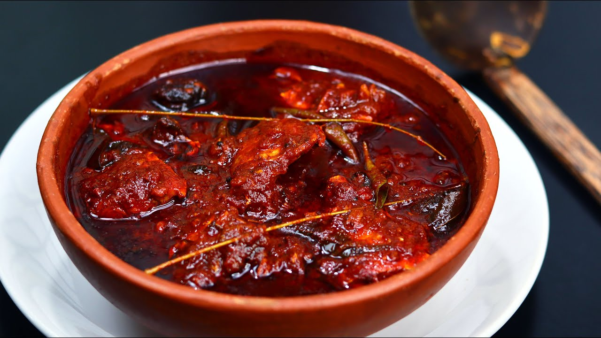

Kottayam Style Fish Curry

Introduction:
Kottayam Style Fish Curry is a traditional Kerala fish curry that is known for its spicy and tangy flavors. It is a staple in the Kottayam region and is usually made with firm fish varieties like Kingfish (Seer fish), Sardines, or Mackerel. The curry gets its distinct taste from the use of Kodampuli (Kokum), which imparts a sour taste, and a special blend of spices that adds a unique aroma to the dish.
Ingredients:
- 500g fish (Kingfish, Sardines, or Mackerel), cleaned and cut into pieces
- 2-3 pieces of Kodampuli (Kokum) soaked in water
- 2 medium onions, finely sliced
- 2 medium tomatoes, chopped
- 1-inch ginger, minced
- 4-5 garlic cloves, minced
- 3-4 green chilies, slit
- 1 sprig curry leaves
- 1/2 teaspoon turmeric powder
- 1 tablespoon red chili powder
- 1 tablespoon coriander powder
- 1/2 teaspoon fenugreek seeds
- 1/2 teaspoon mustard seeds
- 1/2 teaspoon cumin seeds
- 2 tablespoons coconut oil
- Salt to taste
- Water
Instructions:
- In a clay pot or a deep-bottomed pan, heat the coconut oil over medium heat.
- Add mustard seeds, cumin seeds, and fenugreek seeds. Allow them to splutter.
- Add sliced onions, green chilies, and curry leaves. Sauté until the onions turn translucent.
- Add minced garlic and ginger. Sauté for a couple of minutes until the raw smell disappears.
- Add turmeric powder, red chili powder, and coriander powder. Mix well and sauté for a minute to release the flavors.
- Add chopped tomatoes and cook until they become soft and mushy.
- Now, add the soaked Kodampuli along with the water it was soaked in. The sourness from Kodampuli is a key element of this fish curry.
- Add enough water to cover the fish pieces. Bring the curry to a boil.
- Lower the heat and gently add the fish pieces to the curry. Make sure the fish is submerged in the curry.
- Season with salt and simmer the curry on low heat for about 10-15 minutes or until the fish is cooked through and the curry thickens.
- Once the fish is cooked, remove the curry from the heat.
- Drizzle a tablespoon of coconut oil on top for added flavor and aroma.
- Allow the curry to rest for a few minutes before serving to let the flavors meld together.
- Serve the delicious Kottayam Style Fish Curry with steamed rice or Kerala-style boiled tapioca for an authentic Kerala meal.
Enjoy the tangy and spicy flavors of Kottayam Style Fish Curry, a true delight for seafood lovers!